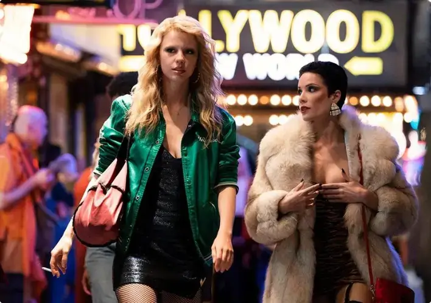

MaXXXine | Novo filme de Mia Goth é baseado em uma história real?
Sequência direta do primeiro, longa será lançado após Pearl, que é um prelúdio
Matheus Fiore
| Publicado em 24 de Janeiro, 2024
Uma peculiar mistura entre real e ficção permeia o próximo grande filme de terror da produtora A24.
Estamos falando de MaXXXine, que chega ainda neste ano e deve concluir a trilogia de filmes de Ti West
(X: A Marca da Morte) com uma história que coloca a personagem-título na mira do Night Stalker, um
assassino em série que existiu de verdade e que fez mais de 15 vítimas em um período de dois anos.
A personagem de Mia Goth (Piscina Infinita) busca por papéis na Los Angeles de 1985,
justamente no auge
da atuação do serial killer e abusador. Enquanto tenta se afastar do currículo anterior, composto de
filmes adultos, Maxine se envolve com detetives particulares e investigadores em busca do assassino, que
tem nas jovens aspirantes a celebridades seu principal alvo.
O Perseguidor da Noite, que também foi chamado pela imprensa como Walk-in Killer
(Visitante Assassino) ou
Valley Intruder (Intruso do Vale), foi Richard Ramírez. Nascido no Texas em 1960 e filho caçula de um
casal de imigrantes mexicanos, ele teve infância e adolescência marcada pelo uso de drogas, abandonando
a escola e frequentando cemitérios.
Confira as imagens
01 de 10

Mia Goth e a Cantora Halsey em cenas do trailer | Foto: Divulgação
MaXXXine
O filme é inspirado em uma história real?
A resposta para a pergunta acima pode ser um “mais ou menos”. A Maxine do filme é uma
atriz fictícia, que
parece repetir os passos de sua algoz de X: A Marca da Morte na busca pelo estrelado. Entretanto, nesse
caminho, ela acaba se encontrando com o já citado Night Stalker, que existiu de verdade e levou medo às
cidades de Los Angeles e San Francisco em meados dos anos 1980. Em 2021, a Netflix lançou uma minissérie
documental sobre ele.
Salve
Ficha técnica de Maxxxine
78kb.pdf
O Perseguidor da Noite, que também foi chamado pela imprensa como Walk-in Killer
(Visitante Assassino) ou
Valley Intruder (Intruso do Vale), foi Richard Ramírez. Nascido no Texas em 1960 e filho caçula de um
casal de imigrantes mexicanos, ele teve infância e adolescência marcada pelo uso de drogas, abandonando
a escola e frequentando cemitérios.
Ouça
Entrevista com Mia Goth
22:31
Diagnosticado com epilepsia, ele teve seus primeiros contatos com a violência por
meio
do primo, Miguel
Valles, um veterano da guerra do Vietnã. Entre histórias de abusos e torturas a soldados inimigos, o
homem conhecido como Mike foi citado por Ramírez como forte influência em seus anos de formação,
principalmente depois de ter assassinado a esposa, em um ato presenciado pelo futuro serial killer.
Serviço
Exibição do filme: Maxxxine
Local: Cinema
Endereço: Rua Benedito Hipólito, 125 - Centro - Rio de Janeiro
Data: 18 a 27 de abril, às quintas, sextas e sábados


 Cinema
Cinema